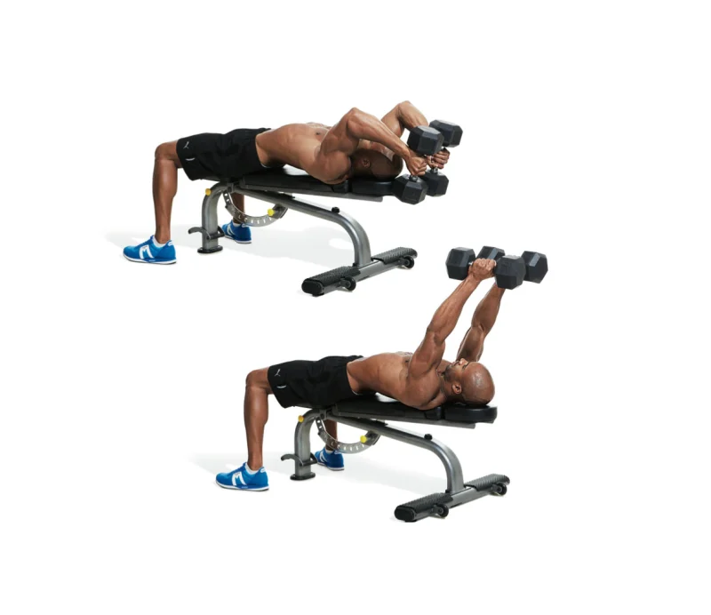

Gym Website Arm Workouts
Arm Workouts
Hammer Curl
- Hold a dumbbell in each hand with palms facing your sides and arms extended straight down.
- Keeping your upper arms against your sides, curl both weights at the same time, minimizing momentum used during the curl.
EZ-Bar Preacher Curl

- Sit at a preacher bench and adjust the height so that your armpits touch the top of the bench.
- Grasp an EZ-curl bar at shoulder width with arms extended (but allow a slight bend at the elbows).
- Curl the bar, keeping the backs of your arms against the bench.
- Take three seconds to lower the bar back down.
Conventional Curl

- Grasp bar with a closed supinated grip at slightly wider than shoulder width with feet shoulder-width apart.
- The bar should be in front of thighs with elbows extended down.
- Flex elbows to move the bar toward shoulders.
- Keep upper arms stationary and knees slightly bent.
- When the bar is close to shoulders, let elbows move back to the starting position.
Triceps Pushdown

- Attach a rope handle to the top pulley of a cable station and hold an end in each hand with elbows flexed.
- Allow your elbows to drift forward a bit as you extend them and then let them drift backward as you lower the weight.
Lying Triceps Extension

- From the end position of your last rep of the neutral-grip press, allow your arms to drift back until the weights are over your face.
- Keeping your upper arms at that angle, bend your elbows and lower the weights behind your head.
- Extend your elbows, keeping the same angle with your upper arms.